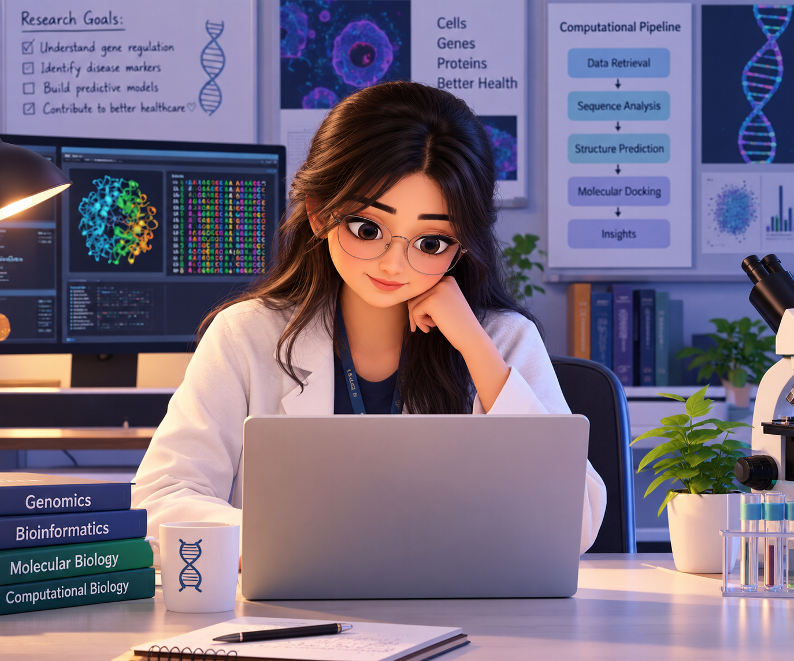

Move your cursor · tap the scene · try typing below
Research notebook
Type a short note. While you type, the character gives a subtle smile as if responding to your activity.
Your note stays in this demo page; nothing is uploaded.
What this prototype demonstrates
Cursor-following pupil overlays, a brief blink on tap/click, and a smile cue while typing or submitting a note. These are layered visual effects, not true 3D facial animation yet.